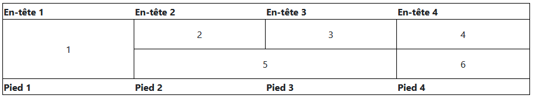
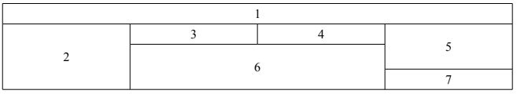

Télécharger et ouvrir dans une éditeur de texte le fichier erreurs.html
Sans avoir recours à l'aide de votre ordinateur, tentez de trouver les erreurs ?
Réécrire la page sans erreur.
Utilisez le valideur du W3C pour vérifier que vous n'avez pas oublié d'erreurs.
Soit le tableau suivant :
Ecrire le code HTML de ce table en utilisant la balise <table>.
Soit le tableau suivant :
Ecrire le code HTML de ce table en utilisant la balise <table>.